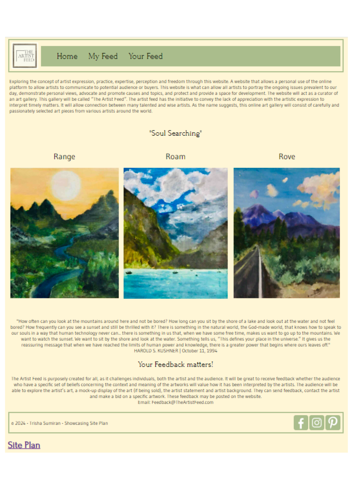
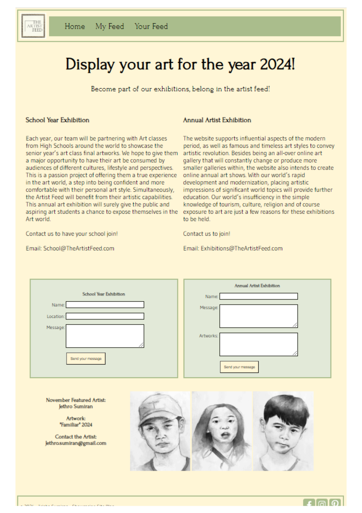

Overview
Purpose
Do you want to see and participate in more creative freedom and expression? With the growing global art market in all platforms, it is no wonder that creativeness and design has been the lifelong expression of human development. As a web design student and art lover, I find many people looking for ways to discover more about art and skills in all platforms of social media and the web. I believe this website can gather all start up artists and be an open space for art postings, blogging and selling without discrimination of techniques and styles. It will be an 'art center' on the web. It will be an informational and clean platform for online display, and most of all accessible by all. This is a virtual one stop art gallery for all!
Audience
This website intends to attract artlings, start up artists, young artists, aesthetes, art enthusiasts, art buyers, art directors, art teachers, art students and every other person out there who has a liking for art. It will be a minimalist website which will be easy to navigate, as well as a platform focused on art postings and selling. This website will be for them that wants to see postings or post themselves or wants to see art sales or sell themselves. This website will want to create engagement with various art lovers and promote artist expression and significance in society.
Branding
Website Logo

Style Guide
Color Palette
Palette URL: https://coolors.co/396e94-e7c24f-a43312-381d2a-aabd8c| Primary | Secondary | Accent 1 | Accent 2 |
|---|---|---|---|
| [#FFF6D6] | [#090C02] | [#E2E9D8] | [#AABD8C] |
Typography
Heading Font: Forum
Forum is the chosen serif font as it provides sophistication and professionalism that often is portrayed by art museums, centers and galleries. The font represents the stand art has in a success driven world. It proves to be a concept that is just as significant, just as relevant and just as considerable as other passions.
Paragraph Font: Gudea
The website will not consist of large paragraphs but will have short artist statements, artwork descriptions, art titles, and costings. This sans serif font, Gudea, will cater to that purpose. It evokes a sense of concise but important information.
Normal paragraph example
The best Whitewater Rafting in Colorado, White Water Rafting Company offers rafting on the Colorado and Roaring Fork Rivers in Glenwood Springs. Since 1974, we have been family owned and operated, rafting the Shoshone section of Glenwood Canyon and beyond.
Colored paragraph example
Trips vary from mild and great for families, to trips exclusively for physically fit and experienced rafters. No matter what type of river adventures you are seeking, White Water Rafting Company can make it happen for you.
Navigation
Site Map
Content
Home page
Introduction:
Exploring the concept of artist expression, practise, expertise, perception and freedom through this website. A website that allows a subjective use of the online platform to allow artists to communicate to potential audience or buyers. This website is what can allow all artists to portray the ongoing issues prevalent to our day, demonstrate personal views, advocate and promote causes and topics, and protect and provide a space for development. The website will act as a curator of an art gallery. This gallery will be called “The Artist Feed”. The artist feed has the initiative to convey the lack of appreciation with the artistic expression to interpret timely matters. It will allow connection between many talented and wise artists. As the name suggests, this online art gallery will consist of carefully and passionately selected art pieces from various artists around the world.
More information at the bottom:
The Artist Feed is purposely created for all as it challenges individuals, both the artist and the audience. It will be great to receive feedback whether the audience who have a specific set of beliefs concerning the context and meaning of the artworks will value how it has been interpreted by the artists. The audience will be able to explore the artist’s art, a mock-up display of the art (if being sold), and the artist statement and artist background. They can send feedback, contact the artist and make a bid on a specific artwork. These feedbacks may be posted on the website.
Email: Feedback@TheArtistFeed.com
The Artist's paintings on wood
Images for the Home page


[My Feed]
The artist will continue to post her art which may be water color paintings, sketches, acrylic paintings, and photographs. This first collection is titled, "Gallivanting".
"Gallivanting"
These are a collection of photographs taken by the artist as she traveled through Australia. Colors being slightly manipulated through her feelings within each photograph evokes a sense of longing and melancholy but simultaneously tranquility and fulfillment. Photos taken to provoke personal feelings towards humanized locations whilst retaining its innate and transcendent beauty. The world stands forcing its pristine state amongst artificial qualities of a human world. Warmth from the trees attract our own warmth through long roads of travels. White rush of waves detract our eyes from the rush of the city. Man-made structures blending with natural structures. We blend as one. We are nature.
Email the artist
Email: Artist@TheArtistFeed.com
Images for the Page 2


Your Feed
Join the Artist Feed!
1. School Year (The Year) Art Pieces
Each year, our team will be partnering with Art classes from High Schools around the world to showcase the senior year’s art class final artworks. For many years, Art high school students have visited art galleries and we hope to give back to them as a way of providing them an opportunity to have their art be consumed by audiences of different cultures, lifestyle and perspectives. This is a passion project of offering them a true experience in the art world, a step into being confident and more comfortable with their personal art style. This annual art exhibition will surely give the public and aspiring art students a chance to expose themselves in the Art world.
Contact us to have your school join!
Email: School@TheArtistFeed.com
Name:
School:
Location:
Inquiry:
2. Exhibitions
Mostly the website will be focusing on influential aspects of the modern period, whilst exploring famous and timeless art styles of any time. Besides being an all-over online art gallery that will constantly change or produce more smaller galleries within, the website also intends to create art shows to reintroduce great pieces posted throughout the year or introduce pieces from those who joined through inquiries. With our world’s rapid development and modernisation, placing artistic impressions of significant world topics will provide further education. Our world’s insufficiency in the simple knowledge of tourism, culture, religion and of course exposure to art is the reason for these exhibitions to be held. This exhibition will be greatly advertised yearly.
Contact us to Join!
Email: Exhibitions@TheArtistFeed.com
Name:
Inquiry:
Artist: Jethro
Artwork: "Familiar"
Images for the Page 3


Wireframes
Create three wireframes for your site. One for each page and list them here
Home
Whitespace is important for the home page making sure that it is clean and flows throughout.
My Feed
The Banner will have a separate box with a slightly different style.
Your Feed
Information will be separated and blocked off by thin and visible margin.